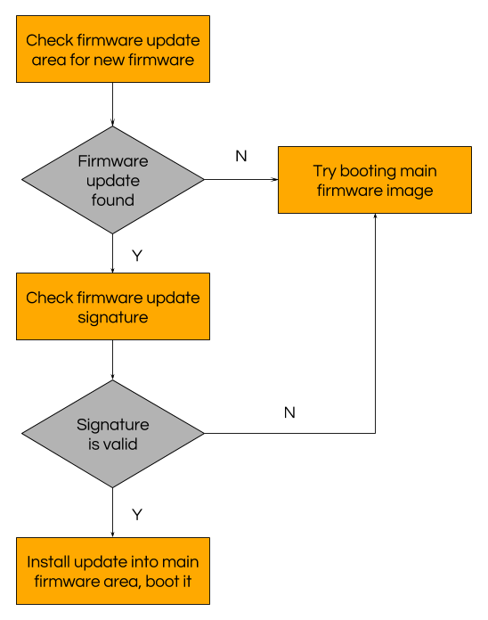
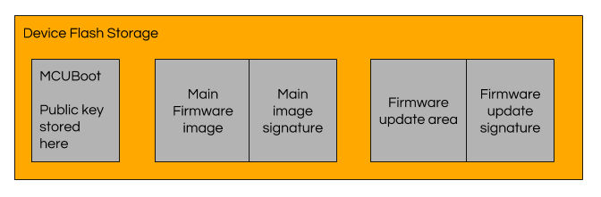

Secure firmware over the air (FOTA) updates are a key Zephyr microPlatform feature. This post explains how to use your own firmware signing key pair to secure the boot process on your devices.
Boot Process Overview
When your Zephyr microPlatform device boots, MCUBoot checks for a cryptographically signed firmware update, then installs and runs it if one is available. Simplified, the boot process looks like this:

The firmware update signature check uses a public key stored in the MCUBoot binary running on the device. MCUBoot checks that the firmware update is signed by the corresponding private key before booting it. This mitigates against attacks which try to boot untrusted firmware on your device.
Think of the data being stored in your device’s flash like this:

To make getting started easy, the MCUBoot repository’s source code contains a default public key, along with its private key in a data file. Since the private key is not secret, this is not secure to use in production. When deploying your devices, you need to use your own key pair, with a private key that you must keep secret.
(If you’re new to these ideas, check out the Public-key cryptography and Digital signature pages on Wikipedia.)
Requirements
You must have the Zephyr microPlatform installed on your system. See the installation instructions here in the microPlatforms documentation for instructions if you haven’t done that.
Any board supported by the Zephyr microPlatform can be used with these instructions.
Generate Keys
Run these commands from the Zephyr microPlatform installation directory.
MCUBoot provides tools which can create and manage your keys. This
section describes how to use them. For more details, including details on protecting your secret key with a password, see the file mcuboot/docs/imgtool.md in your Zephyr microPlatform installation directory.
The MCUBoot tools depend on the cryptography module. Install it first; for example, using pip3:
pip3 install --user cryptography
Now generate an RSA 2048 key pair (this is the default key type used by MCUBoot; if you configured MCUBoot differently, you need to adjust -t accordingly):
./mcuboot/scripts/imgtool.py keygen -k my-secret-key.pem -t rsa-2048
The contents of the file my-secret-key.pem are a secret. Guard it closely.
Next, generate some C code containing the public key as an array:
./mcuboot/scripts/imgtool.py getpub -k my-secret-key.pem
The output looks like this:
/* Autogenerated by imgtool.py, do not edit. */
const unsigned char rsa_pub_key[] = {
0x11, 0x22, 0x33, 0x44, 0x55, 0x66, 0x77, 0x88,
/* [additional lines omitted] */
0x99, 0xaa, 0xbb, 0xcc, 0xdd, 0xee,
};
const unsigned int rsa_pub_key_len = 270;
You will copy these values into the MCUBoot source code.
Copy the Public Key Into the MCUBoot Source Code
Now open the file mcuboot/boot/zephyr/keys.c in your editor. Search for lines that look like this:
#if defined(MCUBOOT_SIGN_RSA)
const unsigned char root_pub_der[] = {
0x30, 0x82, 0x01, 0x0a, 0x02, 0x82, 0x01, 0x01, 0x00, 0xd1, 0x06, 0x08,
/* Additional lines omitted. */
0xc9, 0x02, 0x03, 0x01, 0x00, 0x01
};
const unsigned int root_pub_der_len = 270;
}
Delete the elements of the root_pub_der array, and replace them with
the imgtool.py output, like this:
#if defined(MCUBOOT_SIGN_RSA)
const unsigned char root_pub_der[] = {
0x11, 0x22, 0x33, 0x44, 0x55, 0x66, 0x77, 0x88,
/* [additional lines omitted] */
0x99, 0xaa, 0xbb, 0xcc, 0xdd, 0xee,
};
const unsigned int root_pub_der_len = 270;
}
Make sure to change the contents of root_pub_der only, not its name.
Make sure that the value of root_pub_der_len matches the rsa_pub_key_len generated by imgtool.
Commit this change and ensure you preserve it.
Build App With Custom MCUBoot image
You can now rebuild your Zephyr microPlatform application binary, along with a customized MCUBoot binary which trusts your public key. Here is an example building the zephyr-fota-samples/dm-lwm2m application for the nrf52_blenano2 board using the zmp tool:
./zmp build -K my-secret-key.pem -b nrf52_blenano2 zephyr-fota-samples/dm-lwm2m
The important files this generates are:
A custom MCUBoot binary which trusts your public key in
outdir/zephyr-fota-samples/dm-lwm2m/nrf52_blenano2/mcuboot/zephyr/zephyr.bin. Use this binary when flashing devices you are going to deploy to the field.A Zephyr binary which is signed with your private key in
outdir/zephyr-fota-samples/dm-lwm2m/nrf52_blenano2/app/zephyr/dm-lwm2m-nrf52_blenano2-signed.bin. You can distribute this binary in FOTA updates.
To verify your setup, flash the custom MCUBoot to your board, along with the signed binary into the main firmware image area. For example, using the zmp tool:
./zmp flash -b nrf52_blenano2 zephyr-fota-samples/dm-lwm2m